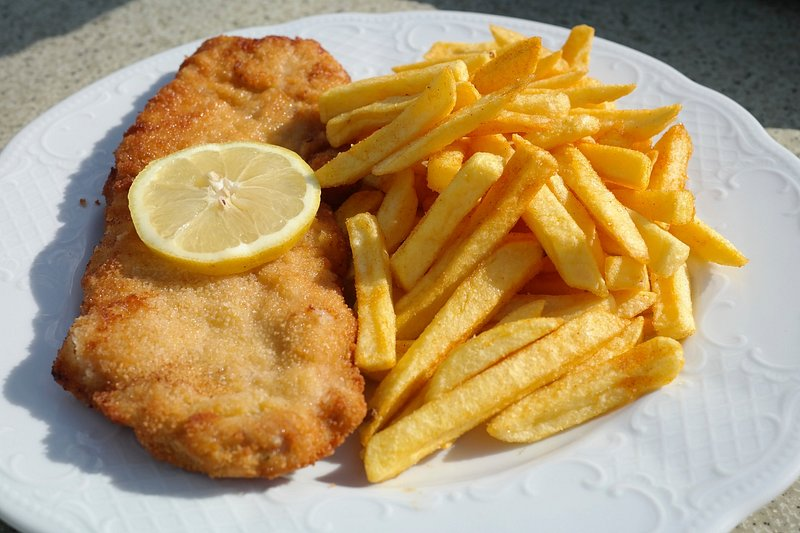

Schnitzel

Description
A thin slice of breaded meat, fried in putter - it's exactly as good and versatile as it sounds.
It's best served with potatoes, but can be combined with almost anything to make a nourishing, hearty meal.
Ingredients
-
A piece of meat, thinly sliced.
Preferably pork, veal, or chicken.
-
Breadcrumps
- Egg
- Flour
- Salt & Pepper
Steps
- If not already the case, slice your meat into thin slices. For pork chops, use a meat hammer to further soften the meat's structure. Spice the meat with salt and ppeper.
- Put flour, breadcrups, and an egg on one plate each. Put the meat first into the flour, then the egg, then the breadcrumps.
Make sure to have uniform layers of breading everywhere.
- Heat up your frying pan with sufficiently much oil or, preferably, butter.
- Fry the schnitzel for 4-5 Minutes on each side, possibly longer depending on taste preferences.
- If in doubt, serve with potatoes. The dish also lends itself to be eaten with an additional sunny-side up egg, mushrooms in cream sauce, ...